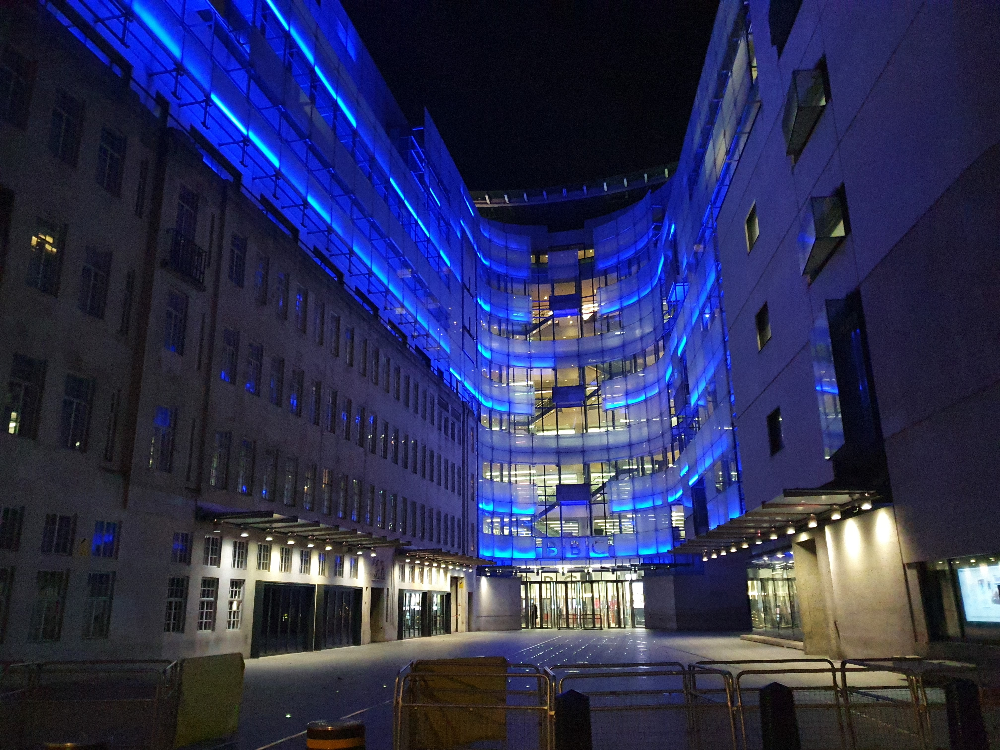
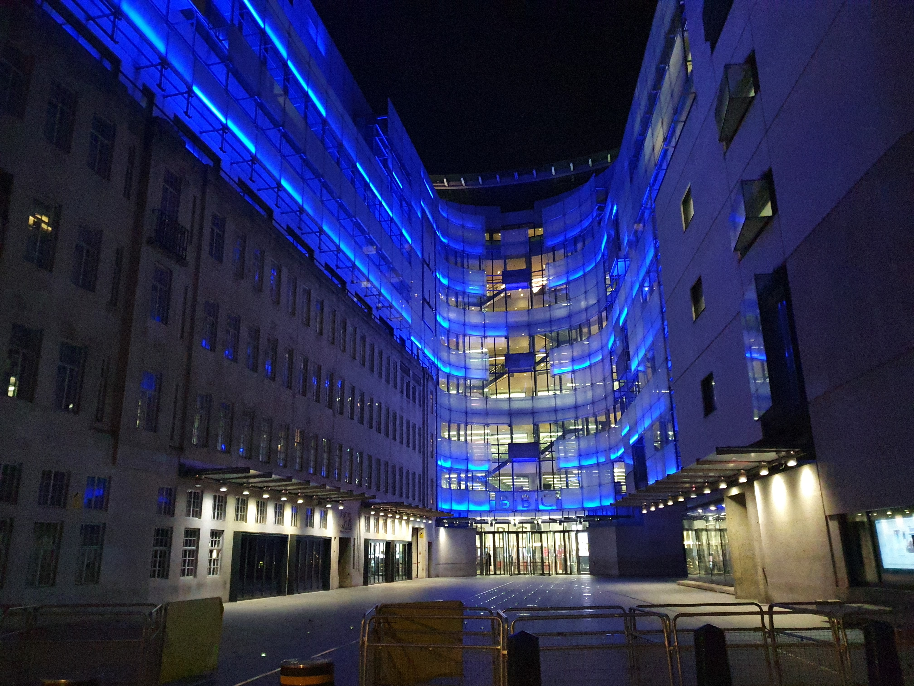
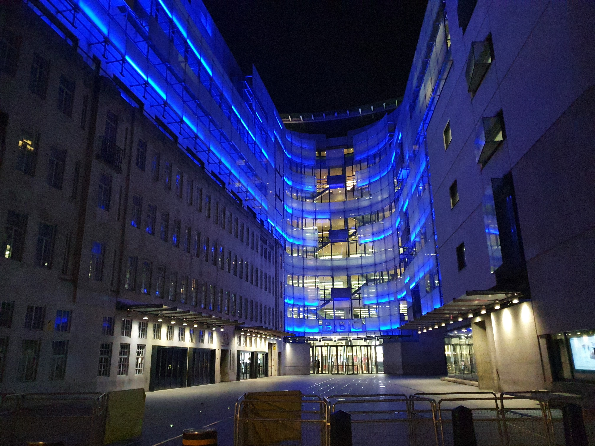

James and Matthew revisit Koppa 1, visit Bond St, take a through train on the 1st day of Crossrail Phase 2, and get bored of the big city. Sigh
-------------
WELCOME TO THE DEEPEST, DARKEST AMNESIA ZONE!
Matthew has at last broken through the worst of the depression, and has now started to get giga-anxiety! In this 8th episode, we now enter what is
quite frankly a total void. Seriously - I have no idea what these next few adventures consist of, and by this point, neither does James. This'll be fun!
-------------
Welcome to 4th year! We were now about 1 month into the masters year, and if you take nothing else from this deepest, darkest part of the amnesia zone,
remember this: doing a masters degree is really fucking hard! Matthew was very busy starting work on his masters project (more on that in a
moment), and James... James was going through some stuff. Fun.
That being said, this starts in basically the same manner as most early Koppas - James was headed to London (this time for some kind of hash), and decided
to drop by, remove Matthew from his misery and take him on a quick adventure! 4th year hadn't fully kicked in yet, so James was still making London
trips (foreshadowing), and now that Bond St had finally opened on the Lizzie line, this was the perfect excuse for a tiny adventure!
Matthew spent most of his 4th year working on that code. I believe we will see a lot more of this code on the next couple of adventures....
But nevertheless, James came to the rescue of Matthew, extracting him from his Fortran90 meeting (at 7pm on a Sunday - very normal Matthew behaviour). James
probably berated Matthew for this, saying it was not healthy. Matthew probably laughed.
The first video we filmed was at Paddington, so I assumed that we immediately headed to Gloucester Road, just like old times, and went to Paddington. We headed
straight for the underground Lizzie line platforms, because for the first time, these platforms had westbound trains! On all earlier adventures, trains had looped
back at PAD, but not today! Today, we were heading to Ealing, but from the underground!
I am writing this in 2024, when complete Lizzie line trains are very standard and old hat. A train that goes from Bond St to Ealing? Who cares? In 2024... I
don't know. But in 2022, we did care. This was seriously cool. It had been 3 years since we had first done this journey on Koppa 1, and at long last, we
could do it as TfL intended - starting underground. The video of this symbolic journey is very sweet but too large for the website - go and watch it on
YouTube (eventually).
At Ealing we turned around and headed back to Bond St (see below video - Sadiq's new service wasn't running too well), which had opened about 2 weeks ago.
By arriving at this final station, we managed to tick off the Lizzie line, after 16 Koppas and 3 years. Yay! Bond St was just like all the others - not much
to say here. Wikipedia informs me that this station has the 2nd longest escalator on the TfL network, which I guess is cool. I didn't know that until just now,
so thanks Wikipedia. On the day, I am pretty sure that we headed straight out and into London. We had a nice little walk towards Oxford Circus. There, we
passed the Microsoft store. At the time, Microsoft was sponsoring the annual Christmas lights, but these may or may not have been up in early November (I
cannot remember), but you know what did look like it had a suspciously corporate affiliation???
"The floor: brought to you by Microsoft!"
Finally, we had a nice walk to the BBC headquarters, which again, we had astonishingly never visited during 16 Koppas. Given James' history with the BBC, this
was yet another monumental NT moment (I miss the James X BBC collaborations).
Unfortunately, I have no recollection of the rest of this adventure - there are no more photos either. I would be tempted to end this account here, were it not for
the first line I wrote, 2 years ago: "and get bored of the big city. Sigh". Hmm. I have no idea what this means. Maybe this was James' depression kicking
in? (Oxford was beginning to be ¬fun.) Maybe we were just sad that central London (and all our original Koppa objectives) were now finished? I quite frankly have
no idea, and never will either. The amnesia zone has claimed its first victim: Rest in Peace (end-of-)Koppa 16. You were an adventure of all time... maybe?
I'd want to end with "and then James and Matthew went home, and they lived happily ever after" - maybe this happened? Like fuck I know. Who on earth knows where
we went next. All I can tell you is that no, we did not live happily ever after - 4th year was about to get a lot tougher...
